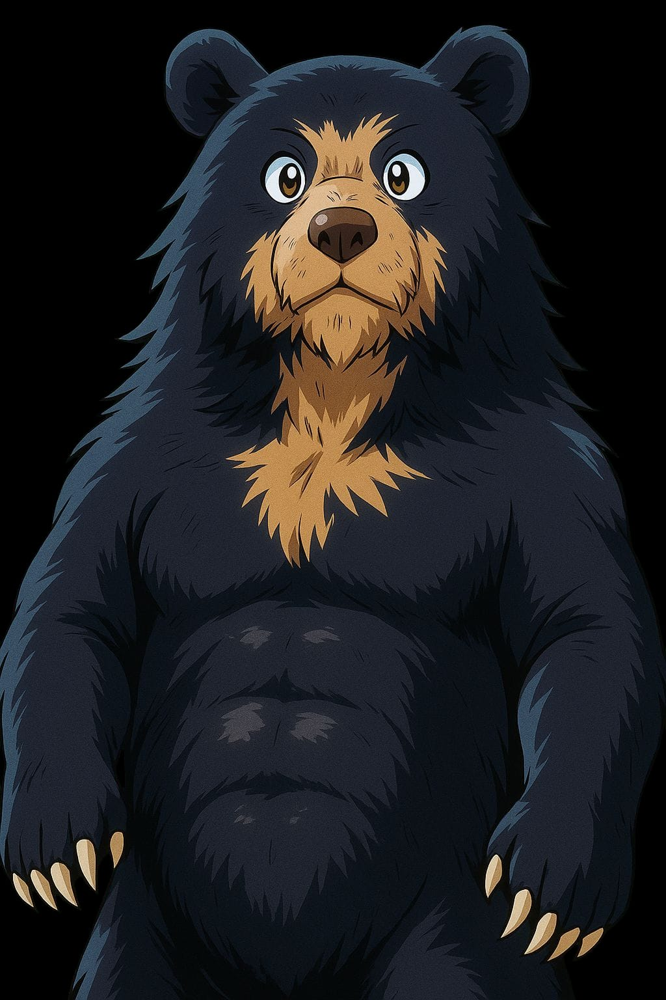
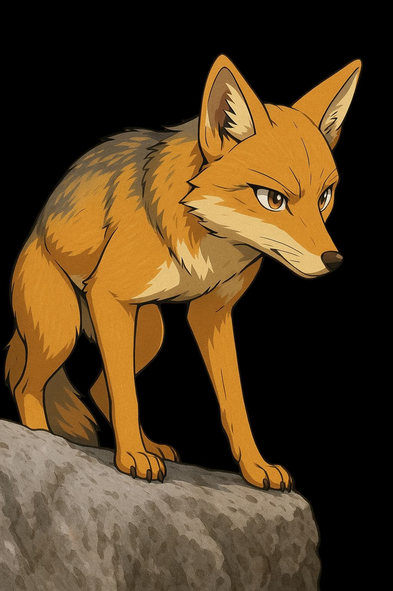
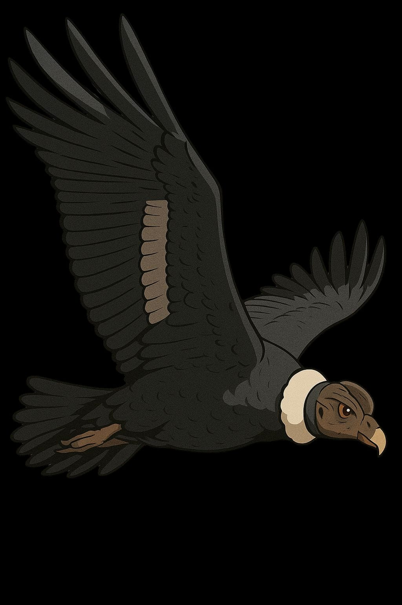
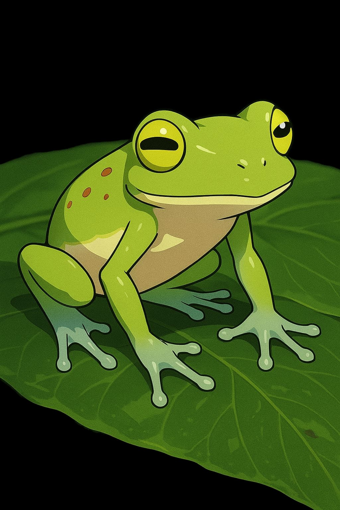

Oso de anteojos (Tremarctos ornatus)
- Hábitat: Bosques nublados y páramos entre 1.800 y 4.300 metros de altitud.
- Omnívoro: se alimenta de frutas, bromelias, pequeños animales.
- Es solitario y de comportamiento tímido.
- Está en peligro de extinción por pérdida de hábitat y cacería.

Zorro andino (Lycalopex culpaeus)
- Hábitat: Desde bosques nublados hasta páramos (2.000–4.700 m).
- Se adapta bien a ambientes modificados por humanos.
- Carnívoro oportunista (roedores, aves, frutas).
- Es fundamental para controlar plagas naturales.

Cóndor andino (Vultur gryphus)
- Hábitat: Acantilados y zonas abiertas de páramos y valles altos (>3.000 m).
- Se alimenta exclusivamente de carroña.
- Necesita vastas extensiones de terreno para volar y buscar alimento.
- Emblema nacional en varios países andinos, incluido Ecuador.

Ranas de cristal (Centrolenidae)
- Hábitat: Bosques nublados cerca de riachuelos.
- Su piel ventral es transparente, dejando ver sus órganos.
- Dependen de agua limpia para su reproducción.
- Muy sensibles a cambios ambientales.

Tapir andino (Tapirus pinchaque)
- Hábitat: Bosques nublados de montaña y páramos entre 1.800 y 4.000 metros.
- Es el tapir más pequeño del mundo.
- Crítico para el ecosistema, ya que dispersa semillas.
- Gravemente amenazado por caza y deforestación.